Alenuihāhā Channel Marine Weather Briefing
Generated Sat 31 Oct 2026 06:30 HST (16:30 UTC) · built twice a day, about 06:30 and 18:30 HST · confirm each product's issue and valid times before relying on it
Channel outlook
Alenuihāhā Channel, built Sat 31 Oct 06:30 HSTNWS zone forecast
- Today15–20 kt East Northeast
- Tonight15–20 kt East Northeast
- Sunday15–20 kt Northeast
Models (median)
- Mid-channel now15 kt
- Mid-channel, highest next 24 h15 kt Sat 06:00
- Mid-channel, highest next 48 h22 kt Mon 05:00
- Off Honokōhau, highest next 24 h6 kt Sat 11:00
Model agreement
- Last 6 RRFS runsRuns agree within 4 kt
- Chance of 30 kt+ mid-channel0% Mon 05:00
- REFS spread (next 48 h)± 4 kt
Model comparison · Wind maps · REFS maps · Zone forecasts · Pressure gradient
Sun & moon mid-channel Sat 31 Oct: sunrise 06:25 · sunset 17:49 · civil dusk 18:12 · waning gibbous, 63% lit · UV peak 8 (very high) today more →
About this report
This automated marine weather briefing is generated using data from the following official sources:
- NWS Honolulu (HFO) coastal/offshore marine forecasts and AFD (via
tgftp.nws.noaa.gov). - NOAA Ocean Prediction Center (OPC) Pacific surface, 500 mb, and wind/wave analyses.
- NDBC buoys (e.g., 51000 and 51002) for pressure and wind observations.
- NOAA GFS 0.25° mean sea-level pressure (PRMSL) fields for synoptic and channel isobar analysis (downloaded through the NOMADS grib filter, 0.25° with a 1° fallback).
- NOAA/NESDIS STAR GOES‑18 Tropical West and HI sector geocolor imagery.
- ASCAT Coastal UHR scatterometer winds (12.5 km) for coastal wind detail.
- Hilo (91285) upper‑air soundings from the University of Wyoming (newest launches) and the Iowa Environmental Mesonet (older ones) for trade‑wind inversion detection; Skew‑T diagrams drawn from them.
- Model wind comparison: NOAA RRFS (deterministic runs and ensemble members) and REFS (NOMADS), the National Blend of Models (AWS), UH WRF (PacIOOS THREDDS), and the NWS Honolulu gridded forecast (
api.weather.gov). - Forecast verification (verify.html): ASCAT-B and -C 12.5 km coastal wind files (EUMETSAT OSI SAF / KNMI, via NASA PO.DAAC, found through NASA CMR) as the measurement; scored against them, the NWS zone forecasts (every issue, from the Iowa Environmental Mesonet archive), NBM (NOAA's AWS archive), RRFS, REFS and UH WRF runs kept by this briefing, the NOAA RRFS v1 retrospective runs (2023–24), the UH WRF archive at PacIOOS, and the NWS gridded forecast; the Hilo sounding before each pass for the inversion.
These sources are combined to provide a practical overview for the Alenuihāhā Channel, balancing large‑scale context (Pacific High, PRMSL) with local indicators (buoys, ASCAT, TWI). Time stamps are shown in both HST and UTC where applicable.
All data is pulled directly from official sources at the time of report generation. Click on any active link to view the most current data available.
How everything here is made, its sources, assumptions and limits, and the weather behind it: the guide.
Credits. Forecasts, charts, observations and model data from NOAA (National Weather Service, Ocean Prediction Center, NCEP, NDBC, NOS CO-OPS), which are not subject to copyright. Satellite imagery: NOAA / NESDIS Center for Satellite Applications and Research (STAR). ASCAT winds: Copyright 2026 EUMETSAT (EUMETSAT OSI SAF / KNMI). UH WRF data provided by PacIOOS (www.pacioos.org), which is a part of the U.S. Integrated Ocean Observing System (IOOS®), funded in part by National Oceanic and Atmospheric Administration (NOAA) Award #NA21NOS0120091. Hilo soundings: University of Wyoming and Iowa Environmental Mesonet. Maunakea discussion: Maunakea Weather Center, University of Hawaiʻi. Zone forecast archive: Iowa Environmental Mesonet. UV Index: US EPA / NOAA CPC. Map outlines: Natural Earth.
This report is intended to support weather study, learning, and awareness and is not a substitute for official forecasts or responsible decision-making.
Source summary
27 sources: 20 current · 1 late · 1 stale · 2 undated · 3 live. Ages update as you read; times are from each product itself.
All 27 sources with issue and valid times
| Source | Time | Age | Valid until | Status |
|---|---|---|---|---|
| Synoptic | ||||
| OPC surface / 500 mb / wind-wave charts Charts: 11 current, 4 late. Time shown is the newest analysis. | Valid Sat 31 Oct 2:00 AM HST (12:00Z) | 5 h ago | — | Late: newer issue overdue |
| High Seas Forecast (Metarea XII) | Issued Sat 31 Oct 1:45 AM HST (11:45Z) | 5 h ago | Superseded Sat 31 Oct 7:45 AM HST (17:45Z) | Current |
| HFO North Pacific surface analysis Loads from NOAA when you open the page. | — | — | Live | |
| Regional | ||||
| GOES-West satellite imagery Loads from NOAA when you open the page. | — | — | Live | |
| Honolulu Area Forecast Discussion | Issued Sat 31 Oct 3:46 AM HST (13:46Z) | 3 h ago | — | Current |
| Hawaiʻi Offshore Waters Forecast (40–240 nm) | Issued Sat 31 Oct 5:02 AM HST (15:02Z) | 1 h ago | Expires Sat 31 Oct 12:30 PM HST (22:30Z) | Current |
| Hawaiʻi Statewide Coastal Waters Forecast (to 40 nm) | Issued Sat 31 Oct 3:50 AM HST (13:50Z) | 3 h ago | — | Current |
| Maunakea Observatories Forecast Discussion | — | — | No time given | |
| Local marine zones | ||||
| Big Island Leeward Waters (PHZ123) | Issued Sat 31 Oct 3:48 AM HST (13:48Z) | 3 h ago | Expires Sat 31 Oct 4:15 PM HST (02:15Z) | Current |
| Alenuihaha Channel (PHZ121) | Issued Sat 31 Oct 3:48 AM HST (13:48Z) | 3 h ago | Expires Sat 31 Oct 4:15 PM HST (02:15Z) | Current |
| Big Island Windward Waters (PHZ122) | Issued Sat 31 Oct 3:48 AM HST (13:48Z) | 3 h ago | Expires Sat 31 Oct 4:15 PM HST (02:15Z) | Current |
| Maui County Windward Waters (PHZ117) | Issued Sat 31 Oct 3:48 AM HST (13:48Z) | 3 h ago | Expires Sat 31 Oct 4:15 PM HST (02:15Z) | Current |
| Maui County Leeward Waters (PHZ118) | Issued Sat 31 Oct 3:48 AM HST (13:48Z) | 3 h ago | Expires Sat 31 Oct 4:15 PM HST (02:15Z) | Current |
| Kamuela radar (PHKM) Loads from NOAA when you open the page. | — | — | Live | |
| Models | ||||
| RRFS extended run (NOAA) | Run Sat 31 Oct 2:00 AM HST (12:00Z) | 5 h ago | — | Current |
| REFS ensemble (NOAA) | Run Sat 31 Oct 2:00 AM HST (12:00Z) | 5 h ago | — | Current |
| RRFS ensemble members (NOAA) 11 answers per hour | Run Sat 31 Oct 2:00 AM HST (12:00Z) | 5 h ago | — | Current |
| National Blend of Models (NOAA) | Run Sat 31 Oct 5:00 AM HST (15:00Z) | 2 h ago | — | Current |
| UH WRF (PacIOOS) PacIOOS posts each run about a day late. | Run Wed 28 Oct 8:00 PM HST (06:00Z) | 2 days ago | — | Current |
| NWS Honolulu gridded forecast | Updated Sat 31 Oct 6:01 AM HST (16:01Z) | 29 min ago | — | Current |
| ASCAT coastal winds Pass times are printed on the image. | — | — | No time given | |
| ASCAT forecast verification 1,049 passes in the archive (762 scored), Jul–Aug 2023 · Jan–Feb 2024 · Apr–Jun 2024 · Sep 2025 – Oct 2026. | Observed Fri 30 Oct 10:12 PM HST (08:12Z) | 8 h ago | — | Current |
| Experimental | ||||
| Pacific High analysis (GFS) | Valid Sat 31 Oct 2:00 AM HST (12:00Z) | 5 h ago | — | Current |
| NDBC buoys 51000 / 51002 | Observed Sat 31 Oct 5:40 AM HST (15:40Z) | 50 min ago | — | Current |
| Station pressure gradient (NWS, Hawaiʻi Mesonet, NOAA tide gauge) | Observed Sat 31 Oct 1:00 AM HST (11:00Z) | 6 h ago | — | Stale |
| Hilo sounding | Observed Sat 31 Oct 2:00 AM HST (12:00Z) | 5 h ago | — | Current |
| Sun and sky | ||||
| UV Index forecast (EPA) Today's hourly forecast; sun and moon times are computed, not downloaded. | — | — | Current | |
All sections
- Channel outlook
- Source summary: issue, valid and expiry times
- Synoptic Level: Pacific Ocean Basin
- Synoptic to Regional Level
- Local Level: Marine Forecast Zones
- Channel Wind Forecast: Model Comparison
- ASCAT Coastal Winds (UHR)
- Forecast Verification against ASCAT (separate page)
- Sun & Moon
- Experimental — Alenuihāhā Channel Wind Analysis
Synoptic Level: Pacific Ocean Basin
Latest Surface, 500 MB, and Wind/Wave Matrix (Ocean Prediction Center)
| Latest | 24 h | 48 h | 72 h | 96 h | |
|---|---|---|---|---|---|
| Surface AnalysisForecasts from the 12Z Sat 31 Oct run | 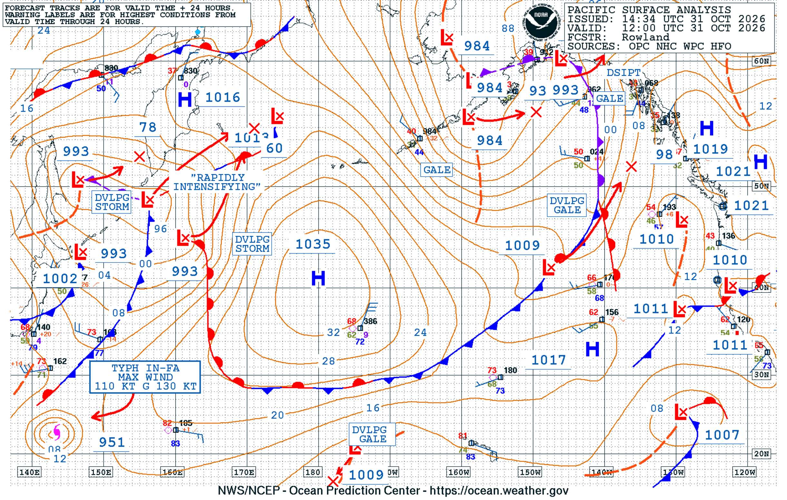 |
 |
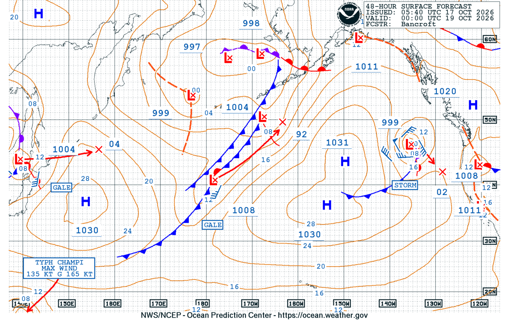 |
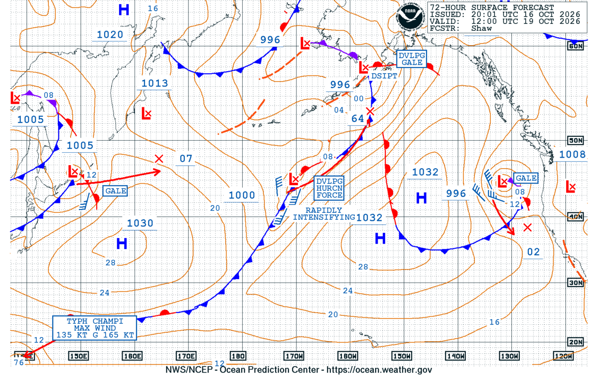 |
 |
| 500 mbForecasts from the 00Z Sat 31 Oct run | 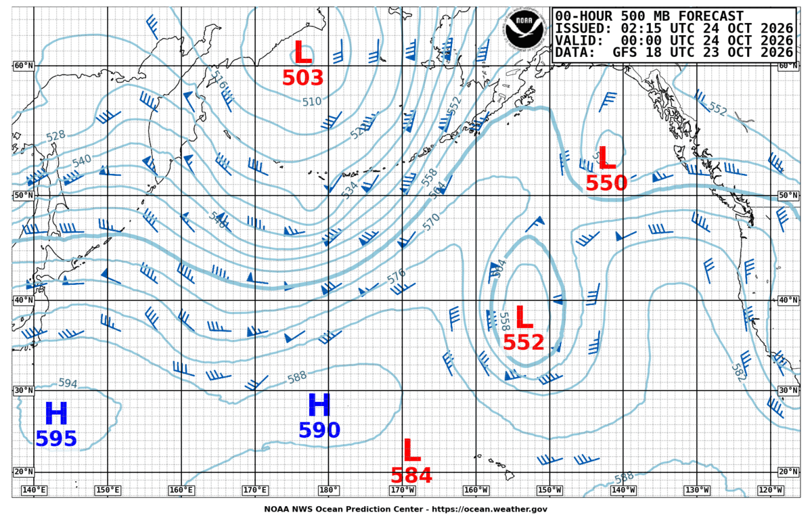 |
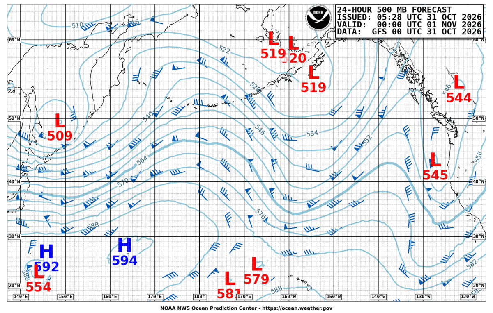 |
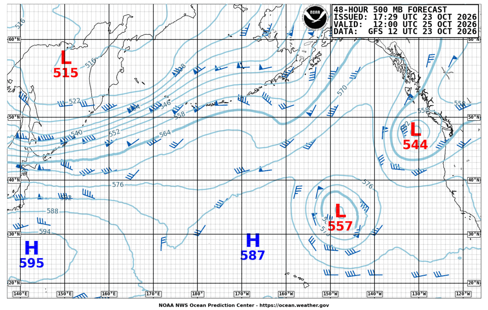 |
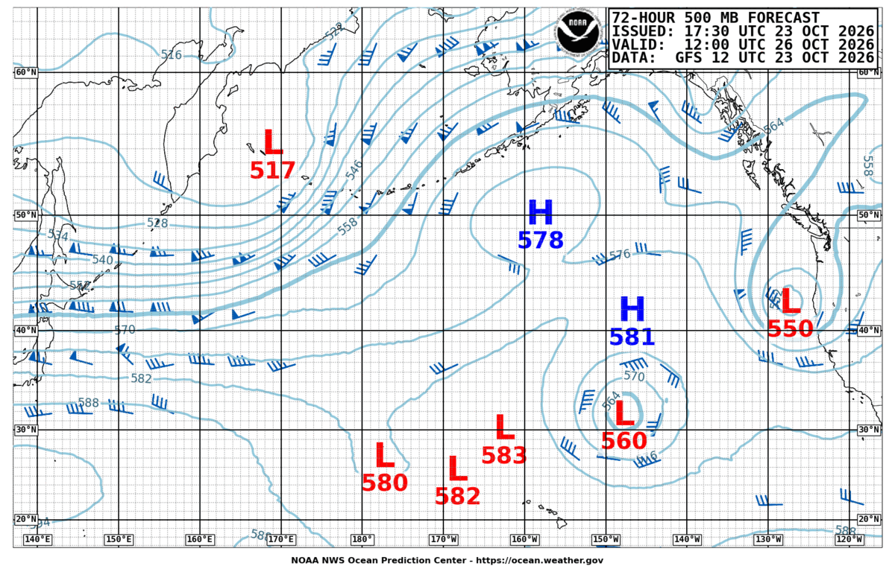 |
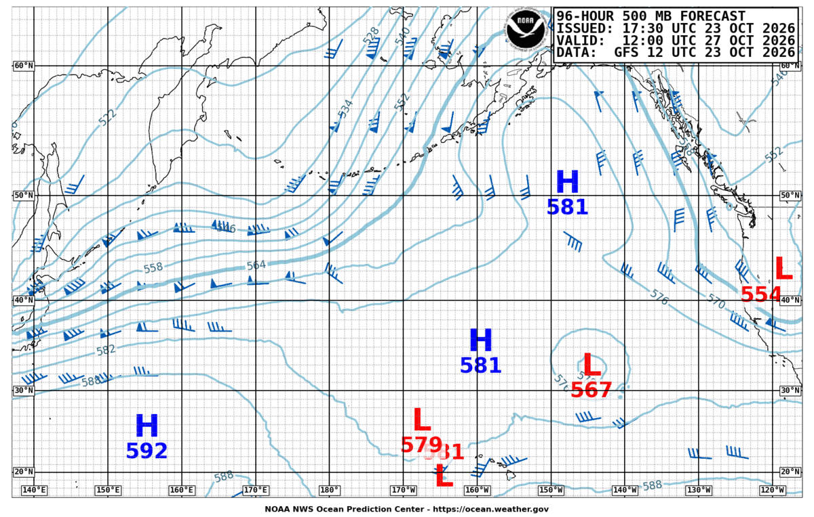 |
| Wind / WaveForecasts from the 12Z Sat 31 Oct run | 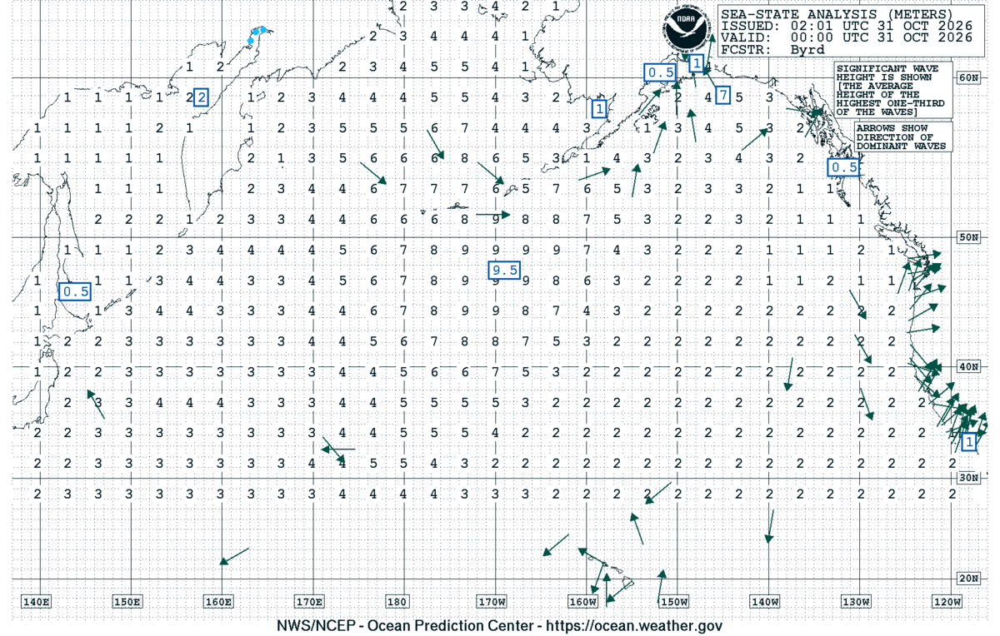 |
 |
 |
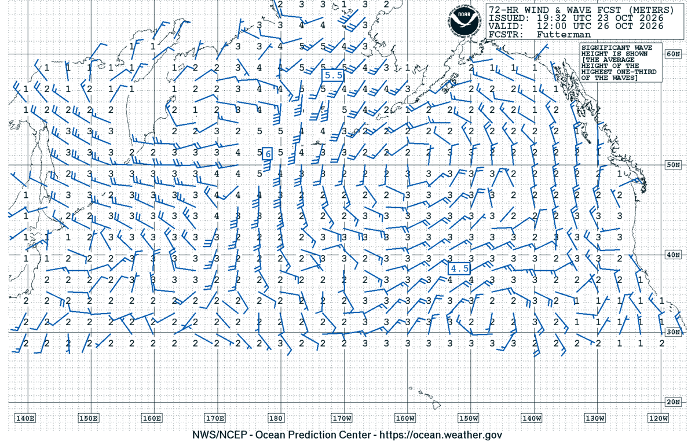 |
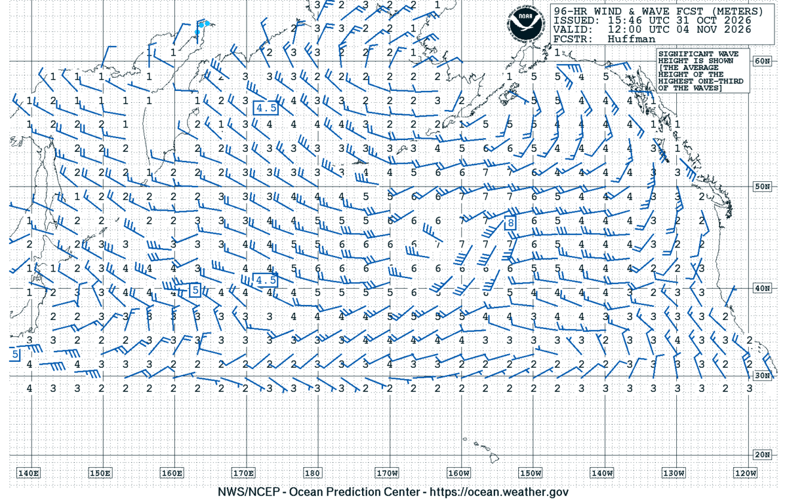 |
NWS Honolulu North Pacific Surface Analysis (Latest)
The Honolulu forecasters' own surface analysis, next to OPC's: it reaches farther into the tropics, covering the ITCZ and the trade-wind belt around Hawaiʻi. Use it for the position and strength of the Pacific High and the fronts, troughs, lows and gales affecting the islands, and to check the automatic Pacific High analysis in the channel analysis section.

High Seas Forecast (Metarea XII)
CCODE/1:31:12:01:00/AOW+POR/NWS/CCODE SUPERSEDED BY NEXT ISSUANCE IN 6 HOURS SEAS GIVEN AS SIGNIFICANT WAVE HEIGHT...WHICH IS THE AVERAGE HEIGHT OF THE HIGHEST 1/3 OF THE WAVES. INDIVIDUAL WAVES MAY BE MORE THAN TWICE THE SIGNIFICANT WAVE HEIGHT. ONLY YOU KNOW THE WEATHER AT YOUR POSITION. REPORT IT TO THE NATIONAL WEATHER SERVICE. EMAIL US AT VOSOPS@NOAA.GOV(LOWERCASE). FOR ANY TROPICAL CYCLONE INFORMATION BEYOND 48 HOURS REFERENCE THE ASSOCIATED NWS TROPICAL CYCLONE FORECAST/ADVISORY (TCM). SECURITE PACIFIC S OF 67N AND N OF 30N E OF A LINE FROM THE BERING STRAIT TO 53N172E TO 50N180W TO 30N180W ALL FORECASTS VALID OVER ICE FREE FORECAST WATERS SYNOPSIS VALID 0600 UTC OCT 31. 24 HOUR FORECAST VALID 0600 UTC NOV 01. 48 HOUR FORECAST VALID 0600 UTC NOV 02. .WARNINGS. ...STORM WARNING... .LOW 59N147W 990 MB MOVING E 10 KT. WITHIN 90 NM E TO NE OF A FRONT FROM LOW CENTER TO 59N143W TO 52N142W WINDS 35 TO 50 KT. SEAS 3 TO 6 M. ELSEWHERE N OF 47N BETWEEN 135W AND 146W WINDS 25 TO 35 KT. SEAS TO 4 M. .24 HOUR FORECAST LOW 59N140W 998 MB. WITHIN 180 NM SE OF A LINE FROM LOW CENTER TO 57N136W TO 53N138W TO 50N136W TO 47N137W WINDS 25 TO 35 KT. SEAS 3 TO 5.5 M. .48 HOUR FORECAST LOW DISSIPATED WITH NEW LOW TO FORM 52N131W 1008 MB. WITHIN 180 NM SE OF A LINE FROM LOW CENTER TO 50N131W TO 48N134W WINDS 25 TO 35 KT. SEAS 2.5 TO 5 M. ...STORM WARNING... .24 HOUR FORECAST COMPLEX LOW W OF AREA WITH MAIN CENTER 53N163E 969 MB AND RAPIDLY INTENSIFYING. W OF A LINE FROM 58N176E TO 50N172W TO 44N173W TO 39N178W WINDS 25 TO 40 KT. SEAS 3 TO 5.5 M. .30 HOUR FORECAST COMPLEX LOW W OF AREA WITH MAIN CENTER 53N164E 960 MB. WITHIN 300 NM E OF A LINE FROM 55N173E TO 55N168E TO 51N177W TO 48N177W TO 47N180W WINDS 35 TO 50 KT. .48 HOUR FORECAST COMPLEX LOW WITH MAIN CENTER 53N171E 951 MB. WITHIN 120 NM SE QUADRANT WINDS 35 TO 50 KT. SEAS 4.5 TO 8.5 M. ELSEWHERE W OF A LINE FROM 62N175W TO 53N155W TO 49N153W TO 43N161W TO 41N158W TO 36N167W WINDS 25 TO 40 KT. SEAS 3 TO 6 M. ...GALE WARNING... .COMPLEX LOW WITH MAIN CENTER 56N152W 980 MB MOVING E 15 KT. WITHIN 540 NM SE...840 NM SW...AND 600 NM NW QUADRANTS WINDS 25 TO 40 KT. SEAS 5 TO 9 M. ELSEWHERE N OF 35N W OF 150W WINDS TO 25 KT. SEAS 3 TO 7 M. .24 HOUR FORECAST COMBINED LOW 56N152W 990 MB. FROM 36N TO 59N BETWEEN 139W AND 173W WINDS 25 TO 35 KT. SEAS 3 TO 7 M...HIGHEST NEAR 47N160W. .48 HOUR FORECAST LOW 57N147W 998 MB. WITHIN 480 NM SE SEMICIRCLE WINDS LESS THAN 25 KT. SEAS 2.5 TO 4 M. ...GALE WARNING... .W OF A COLD FRONT EXTENDING FROM 30N174W TO 33N165W TO 37N158W WINDS 25 TO 35 KT. SEAS 2.5 TO 5 M. .24 HOUR FORECAST CONDITIONS MOVED S OF AREA. .SYNOPSIS AND FORECAST. .48 HOUR FORECAST NEW LOW 43N138W 1002 MB. FROM 30N TO 45N BETWEEN 131W AND 163W WINDS 20 TO 30 KT. SEAS 3 TO 5.5 M. .DENSE FOG. VSBY OCCASIONALLY LESS THAN 1 NM WITHIN 120 NM NE OF A LINE FROM 60N146W TO 58N142W...AND N OF 55N BETWEEN 165W AND 180W. .24 HOUR FORECAST DENSE FOG WITHIN 60 NM NE OF A LINE FROM 54N172W TO 51N167W AND W OF A LINE FROM 56N173E TO 55N179W TO 46N175W. .48 HOUR FORECAST DENSE FOG WITHIN 180 NM NE OF A LINE FROM 59N177E TO 54N160W. .FORECASTER HYDE. OCEAN PREDICTION CENTER. NATIONAL HURRICANE CENTER MIAMI FL E PACIFIC FROM THE EQUATOR TO 30N E OF 140W AND 03.4S TO THE EQUATOR E OF 120W SYNOPSIS VALID 0600 UTC SAT OCT 31. 24 HOUR FORECAST VALID 0600 UTC SUN NOV 1. 48 HOUR FORECAST VALID 0600 UTC MON NOV 2. .WARNINGS. .NONE. .SYNOPSIS AND FORECAST. .WITHIN 16N94W TO 16N95W TO 15N96W TO 14N95W TO 15N94W TO 16N94W...INCLUDING THE GULF OF TEHUANTEPEC...N WINDS 20 TO 25 KT. SEAS LESS THAN 2.5 M. .24 HOUR FORECAST LITTLE CHANGE. .48 HOUR FORECAST WITHIN 16N94W TO 16N95W TO 14N96W TO 13N95W TO 15N94W TO 16N94W...INCLUDING THE GULF OF TEHUANTEPEC...N WINDS 20 TO 30 KT. SEAS 2.5 M. .LOW PRES NEAR 26N129W 1007 MB. WITHIN 28N129W TO 28N140W TO 26N140W TO 25N136W TO 27N130W TO 28N129W NE WINDS 20 TO 25 KT. SEAS 2.5 TO 3.0 M. .24 HOUR FORECAST LOW PRES NEAR 28N122W 1004 MB. WITHIN 28N117W TO 30N120W TO 30N124W TO 28N124W TO 25N119W TO 25N117W TO 28N117W WINDS 20 TO 30 KT. SEAS 2.5 TO 3.0 M. WITHIN 30N125W TO 21N136W TO 21N132W TO 24N125W TO 24N120W TO 30N125W WINDS 20 KT OR LESS. SEAS 2.5 TO 3.0 M IN NW TO N SWELL. .48 HOUR FORECAST LOW PRES NE OF AREA. WITHIN 29N115W TO 30N116W TO 30N120W TO 25N120W TO 25N118W TO 27N115W TO 29N115W...INCLUDING SEBASTIAN VIZCAINO BAY...WINDS 20 KT OR LESS. SEAS 2.5 TO 3.0 M IN S TO SW SWELL. .WITHIN 09N120W TO 08N136W TO 00N135W TO 03S120W TO 03.4S87W TO 09N120W...EXCEPT LEE OF GALAPAGOS ISLANDS...WINDS 20 KT OR LESS. SEAS 2.5 TO 3.0 M IN S TO SW SWELL. .24 HOUR FORECAST WITHIN 01N94W TO 02N96W TO 01N99W TO 03.4S103W TO 03.4S95W TO 01N94W WINDS 20 KT OR LESS. SEAS 2.5 TO 3.0 M IN SW SWELL. .39 HOUR FORECAST CONDITIONS IMPROVE. WINDS 20 KT OR LESS. SEAS LESS THAN 2.5 M. .03 HOUR FORECAST WITHIN 11N86W TO 11N87W TO 11N88W TO 10N88W TO 10N86W TO 11N86W...INCLUDING THE GULF OF PAPAGAYO...NE WINDS 20 TO 25 KT. SEAS LESS THAN 2.5 M. .24 HOUR FORECAST LITTLE CHANGE. .42 HOUR FORECAST CONDITIONS IMPROVE. WINDS 20 KT OR LESS. SEAS LESS THAN 2.5 M. .36 HOUR FORECAST WITHIN 31N113W TO 32N115W TO 31N115W TO 30N115W TO 30N113W TO 31N113W...INCLUDING THE GULF OF CALIFORNIA...S TO SW WINDS 20 TO 30 KT. SEAS LESS THAN 2.5 M. .48 HOUR FORECAST CONDITIONS IMPROVE. WINDS 20 KT OR LESS. SEAS LESS THAN 2.5 M. .48 HOUR FORECAST WITHIN 30N137W TO 30N140W TO 28N140W TO 29N139W TO 30N137W WINDS 20 KT OR LESS. SEAS 2.5 TO 3.0 M IN NW SWELL. .REMAINDER OF AREA WINDS 20 KT OR LESS. SEAS LESS THAN 2.5 M. CONVECTION VALID AT 0830 UTC SAT OCT 31... .INTERTROPICAL CONVERGENCE ZONE/MONSOON TROUGH... MONSOON TROUGH FROM 08N79W TO 05N97W. A TROUGH IS ANALYZED FROM 03N78W TO 00N94W. ITCZ FROM 05N97W TO 08N120W. ANOTHER TROUGH IS FROM 10N131W TO 01N131W. 1011 MB LOW IS NEAR 07N137W. SCATTERED MODERATE S OF 05N AND E OF 120W. SCATTERED MODERATE TO STRONG S OF 15N AND W OF 125W. $$ .FORECASTER ERA. NATIONAL HURRICANE CENTER. NATIONAL WEATHER SERVICE HONOLULU HI NORTH PACIFIC EQUATOR TO 30N BETWEEN 140W AND 180W SYNOPSIS VALID 0000 UTC OCT 31 2026. 24 HOUR FORECAST VALID 0000 UTC NOV 01 2026. 48 HOUR FORECAST VALID 0000 UTC NOV 02 2026. .WARNINGS. ...GALE WARNING... .LOW NEAR 21N172W 1008 MB MOVING SW 15 KT. TROUGH FROM 23N168W TO LOW TO 17N178W TO 11N180W NEARLY STATIONARY. NE WINDS 20 TO 30 KT AND SEAS 2.5 TO 4 M NW OF THE LOW AND TROUGH SYSTEM W OF 168W. SCATTERED MODERATE TSTMS IN ASSOCIATION WITH LOW AND TROUGH FROM 22N TO 26M BETWEEN 165W AND 175W. .24 HOUR FORECAST LOW NEAR 17N178W 1010 MB. TROUGH FROM 21N169W TO LOW. NE WINDS 30 TO 35 KT WITHIN 120 NM OF 23N168W. WINDS 20 TO 30 KT AND SEAS 2.5 TO 5 M ELSEWHERE NNW OF A LINE FROM 30N158W TO 20N180W. .48 HOUR FORECAST LOW TRANSITIONING TO TROUGH NEAR 17N180W 1012 MB. WINDS 20 TO 30 KT BETWEEN TWO LINES FROM 30N153W TO 24N180W AND 30N147W TO 22N160W TO 20N180W. SEAS 2.5 TO 4 M N OF 14N EXCEPT N OF A LINE FROM 30N165W TO 27N180W. .SYNOPSIS AND FORECAST. .TROUGH FROM 01N153W TO 05N153W TO 08N151W MOVING SLOWLY W. SCATTERED MODERATE TSTMS IN ASSOCIATION WITH TROUGH S OF LINE FROM 11N153W TO 03N140W. .24 HOUR FORECAST TROUGH FROM 02N156W TO 08N154W. .48 HOUR FORECAST TROUGH FROM 01N156W TO 05N152W .24 HOUR FORECAST NEW FRONT FROM 30N155W TO 26N146W. .48 HOUR FORECAST FRONT FROM 30N146W TO 25N150W TO 22N157W. .OTHERWISE...WINDS 20 KT OR LESS AND SEAS 2.5 M OR LESS OVER REMAINDER OF FORECAST AREA. $$ .FORECASTER BLOOD. HONOLULU HI.
Synoptic to Regional Level
Latest Satellite Imagery
These load live from NOAA each time the page opens.
GOES-West - Tropical West GeoColor (day true color, night multispectral IR)

GOES-West - Hawaiʻi Sector GeoColor (day true color, night multispectral IR)

Honolulu Area Forecast Discussion
A plume of shallow moisture lingering in a light to moderate trade wind flow will maintain increased cloud cover through morning, while wet conditions persist over mainly windward Big Island. An approaching disturbance aloft may trigger a few heavy showers this afternoon and tonight, mainly over Kauai and Oahu. The tail end of a front will move down the island chain late Sunday through Monday, bringing breezy northeasterly trades and drier air in its wake. Breezy easterly trades will bring periods of windward and mauka showers through the rest of the week.
Stubborn shallow moisture continues to produce enhanced cloud cover over the island chain with somewhat wet conditions lingering on windward Big Island this morning. The surface trough that affected the state during the past few days is now over 50 miles southeast of Big Island and drifting away as light to moderate trade winds remain in place over the state. Deeper moisture pooled along this feature will continue to produce somewhat wet conditions across windward Big Island this morning, with a decrease in shower activity expected this afternoon as moisture decreases. A lingering band of shallow moisture continues to stretch across the remainder of the state and extends to an area of thunderstorms 100 to 500 miles west of Kauai. Despite high humidity, shower activity is expected to be limited from Maui to Kauai this morning, but as the upper level trough generating the thunderstorms to the west edges closer to the islands this afternoon, a few heavy showers could develop on Kauai and possibly Oahu.
Light trade winds will produce mainly windward rainfall from Big Island to Maui County tonight into early Sunday morning, while the above mentioned upper level trough passes just north of the state and possibly generates more shower activity near Kauai and Oahu. The ECMWF is suggesting higher chances of rainfall over the western end of the island chain, while the GFS is keeping the heavier showers away from the islands. As a result, confidence is lower than usual.
A shallow front will break apart as it moves down the island chain late Sunday and Sunday night. While this feature will deliver some rainfall to windward and north facing terrain, the main impact will be the development of breezy and gusty northeasterly trade winds from west to east. Deep high pressure building behind the front will usher in a drier and more stable air mass, and with dew points potentially dropping into the lower 60s or may even the upper 50s, this will feel more like the first shot of winterlike conditions than just relief from the recent humidity.
A breezy and stable trade wind flow will continue through at least the end of the work week as high pressure holds north of the state. Dew points will remain quite low on Tuesday, then gradually rebound closer to normal. Expect rainfall to be largely focused across windward slopes, with passing light rainfall leeward.
Heading into next weekend, focus returns to the tropics again. While the details are out of agreement, the GFS and ECMWF are showing possible tropical cyclone development far southeast of the state late in the week with some chance of a tropical cyclone being near or south the islands next weekend. The National Hurricane Center continues to monitor this area, maintaining a medium (40 percent) chance of development over the next 7 days.
A trough to the west and ridge to the east will maintain easterly trade winds through the morning, with significant differences in model solutions later by mid morning. Light showers and clouds will focus over primarily windward and mountain areas this morning. The exception will be windward Big Island, where increased moisture will linger through the forecast period, keeping lower ceilings and reduced visibility in place. This afternoon and evening's conditions will depend on the progression of the trough to the west. Half of our model solutions depict this feature bringing deeper moisture over Kauai and moving down to Oahu this afternoon through tonight, along with veering winds to the southeast. This solution would mean more showers and low ceilings/reduced visibility over Oahu and Kauai tonight. The other half of our models show drier conditions with light easterly winds. There is also the chance for some pop up afternoon showers today as low level moisture associated with the trough lingers.
AIRMET Sierra for mountain obscuration remains in effect abv 020 for windward areas of the Big Island, Maui, and Molokai. This could remain through the early morning before improving late morning.
High pressure to the north will bring moderate to fresh trades to the region today. Northeast winds are forecast to strengthen behind a trough dropping south across the islands on Sunday, which may require a Small Craft Advisory for all coastal waters. An incoming north-northwest swell combined with strengthening trades will push seas in excess of 10 feet for exposed waters. Moderate to fresh northeast trades remain in place through much of the week as high pressure sits north of Hawaii.
The current small, short period north-northeast swell will maintain small surf along north- and east-facing shores today. The forerunners from a moderate, long-period northwest swell are expected to arrive this afternoon/evening, with the swell building quickly overnight. By Sunday, advisory level surf is expected for north and west facing shores, which is expected to continue into Monday. The swell is may shift slightly more northerly briefly build further on Monday before dropping on Tuesday. Depending on the exact direction, a Marine Weather Statement may eventually need to be issued due to the potential for harbor surges at Kahului and Hilo during that time. Another advisory level northwest swell is possible Thursday into Friday.
The current moderate, medium period south swell will gradually decline through the weekend. Surf above seasonal average returns to seasonal average on Sunday as the south swell energy fades. During the first half of next week, south shore surf will return to below seasonal averages.
East-facing shores will see an increase in trade wind swell as northeast winds return on Sunday. Surf along east-facing shores will increase through Monday night and conditions will be choppy as trades sustain through much of the week.
The anomalously wet conditions during the past few months and the rainfall from the past few days has kept the Keetch-Byram Drought Index (KBDI) below 500 across nearly all of the state. Fire weather concerns will be low through early Sunday as trade winds remain light and humidity elevated. Breezy and much drier trade winds will develop by Monday, but since KBDI will remain suppressed, fire weather conditions will be moderate.
None.
DISCUSSION...Wroe AVIATION...Tsamous MARINE...Quesada FIRE WEATHER...Wroe
Original text
FXHW60 PHFO 311346 AFDHFO Area Forecast Discussion National Weather Service Honolulu HI 346 AM HST Sat Oct 31 2026 .SYNOPSIS... A plume of shallow moisture lingering in a light to moderate trade wind flow will maintain increased cloud cover through morning, while wet conditions persist over mainly windward Big Island. An approaching disturbance aloft may trigger a few heavy showers this afternoon and tonight, mainly over Kauai and Oahu. The tail end of a front will move down the island chain late Sunday through Monday, bringing breezy northeasterly trades and drier air in its wake. Breezy easterly trades will bring periods of windward and mauka showers through the rest of the week. && .DISCUSSION... Stubborn shallow moisture continues to produce enhanced cloud cover over the island chain with somewhat wet conditions lingering on windward Big Island this morning. The surface trough that affected the state during the past few days is now over 50 miles southeast of Big Island and drifting away as light to moderate trade winds remain in place over the state. Deeper moisture pooled along this feature will continue to produce somewhat wet conditions across windward Big Island this morning, with a decrease in shower activity expected this afternoon as moisture decreases. A lingering band of shallow moisture continues to stretch across the remainder of the state and extends to an area of thunderstorms 100 to 500 miles west of Kauai. Despite high humidity, shower activity is expected to be limited from Maui to Kauai this morning, but as the upper level trough generating the thunderstorms to the west edges closer to the islands this afternoon, a few heavy showers could develop on Kauai and possibly Oahu. Light trade winds will produce mainly windward rainfall from Big Island to Maui County tonight into early Sunday morning, while the above mentioned upper level trough passes just north of the state and possibly generates more shower activity near Kauai and Oahu. The ECMWF is suggesting higher chances of rainfall over the western end of the island chain, while the GFS is keeping the heavier showers away from the islands. As a result, confidence is lower than usual. A shallow front will break apart as it moves down the island chain late Sunday and Sunday night. While this feature will deliver some rainfall to windward and north facing terrain, the main impact will be the development of breezy and gusty northeasterly trade winds from west to east. Deep high pressure building behind the front will usher in a drier and more stable air mass, and with dew points potentially dropping into the lower 60s or may even the upper 50s, this will feel more like the first shot of winterlike conditions than just relief from the recent humidity. A breezy and stable trade wind flow will continue through at least the end of the work week as high pressure holds north of the state. Dew points will remain quite low on Tuesday, then gradually rebound closer to normal. Expect rainfall to be largely focused across windward slopes, with passing light rainfall leeward. Heading into next weekend, focus returns to the tropics again. While the details are out of agreement, the GFS and ECMWF are showing possible tropical cyclone development far southeast of the state late in the week with some chance of a tropical cyclone being near or south the islands next weekend. The National Hurricane Center continues to monitor this area, maintaining a medium (40 percent) chance of development over the next 7 days. && .AVIATION... A trough to the west and ridge to the east will maintain easterly trade winds through the morning, with significant differences in model solutions later by mid morning. Light showers and clouds will focus over primarily windward and mountain areas this morning. The exception will be windward Big Island, where increased moisture will linger through the forecast period, keeping lower ceilings and reduced visibility in place. This afternoon and evening's conditions will depend on the progression of the trough to the west. Half of our model solutions depict this feature bringing deeper moisture over Kauai and moving down to Oahu this afternoon through tonight, along with veering winds to the southeast. This solution would mean more showers and low ceilings/reduced visibility over Oahu and Kauai tonight. The other half of our models show drier conditions with light easterly winds. There is also the chance for some pop up afternoon showers today as low level moisture associated with the trough lingers. AIRMET Sierra for mountain obscuration remains in effect abv 020 for windward areas of the Big Island, Maui, and Molokai. This could remain through the early morning before improving late morning. && .MARINE... High pressure to the north will bring moderate to fresh trades to the region today. Northeast winds are forecast to strengthen behind a trough dropping south across the islands on Sunday, which may require a Small Craft Advisory for all coastal waters. An incoming north-northwest swell combined with strengthening trades will push seas in excess of 10 feet for exposed waters. Moderate to fresh northeast trades remain in place through much of the week as high pressure sits north of Hawaii. The current small, short period north-northeast swell will maintain small surf along north- and east-facing shores today. The forerunners from a moderate, long-period northwest swell are expected to arrive this afternoon/evening, with the swell building quickly overnight. By Sunday, advisory level surf is expected for north and west facing shores, which is expected to continue into Monday. The swell is may shift slightly more northerly briefly build further on Monday before dropping on Tuesday. Depending on the exact direction, a Marine Weather Statement may eventually need to be issued due to the potential for harbor surges at Kahului and Hilo during that time. Another advisory level northwest swell is possible Thursday into Friday. The current moderate, medium period south swell will gradually decline through the weekend. Surf above seasonal average returns to seasonal average on Sunday as the south swell energy fades. During the first half of next week, south shore surf will return to below seasonal averages. East-facing shores will see an increase in trade wind swell as northeast winds return on Sunday. Surf along east-facing shores will increase through Monday night and conditions will be choppy as trades sustain through much of the week. && .FIRE WEATHER... The anomalously wet conditions during the past few months and the rainfall from the past few days has kept the Keetch-Byram Drought Index (KBDI) below 500 across nearly all of the state. Fire weather concerns will be low through early Sunday as trade winds remain light and humidity elevated. Breezy and much drier trade winds will develop by Monday, but since KBDI will remain suppressed, fire weather conditions will be moderate. && .HFO WATCHES/WARNINGS/ADVISORIES... None. && $$ DISCUSSION...Wroe AVIATION...Tsamous MARINE...Quesada FIRE WEATHER...Wroe
Hawaiʻi Offshore Waters Forecast (40–240 nm)
Hawaiian offshore waters beyond 40 nautical miles out to 240 nautical miles including the portion of the Papahanaumokuakea Marine National Monument east of French Frigate Shoals
Seas given as significant wave height, which is the average height of the highest 1/3 of the waves. Individual waves may be more than twice the significant wave height.
High pressure far NW of the area moves SE toward the Hawaiian Islands through the weekend. A shallow front moves over N waters Sunday, with strong high pressure building N of the area Sunday and Monday and remaining in place through midweek.
NE to E winds 10 to 20 kt. Seas 6 to 7 ft. Isolated thunderstorms NW waters and far SE waters.
NW waters, NE winds 15 to 25 kt. Elsewhere, NE to E winds 10 to 20 kt. Seas 6 to 9 ft. Isolated thunderstorms NW waters and far SE waters.
NW half, NE winds 15 to 25 kt. SE half, NE winds 10 to 20 kt. Seas 6 to 13 ft. Isolated thunderstorms NW waters.
NE winds 15 to 25 kt. Seas 6 to 14 ft.
E winds 15 to 25 kt. Seas 8 to 11 ft.
Original text
FZHW60 PHFO 311502 OFFHFO Offshore Waters Forecast for Hawaii National Weather Service Honolulu HI 502 AM HST Sat Oct 31 2026 Hawaiian offshore waters beyond 40 nautical miles out to 240 nautical miles including the portion of the Papahanaumokuakea Marine National Monument east of French Frigate Shoals Seas given as significant wave height, which is the average height of the highest 1/3 of the waves. Individual waves may be more than twice the significant wave height. PHZ105-312230- 502 AM HST Sat Oct 31 2026 .Synopsis for the Hawaiian offshore waters... High pressure far NW of the area moves SE toward the Hawaiian Islands through the weekend. A shallow front moves over N waters Sunday, with strong high pressure building N of the area Sunday and Monday and remaining in place through midweek. $$ PHZ180-312230- Hawaiian Offshore Waters- 502 AM HST Sat Oct 31 2026 .TODAY...NE to E winds 10 to 20 kt. Seas 6 to 7 ft. Isolated thunderstorms NW waters and far SE waters. .TONIGHT...NW waters, NE winds 15 to 25 kt. Elsewhere, NE to E winds 10 to 20 kt. Seas 6 to 9 ft. Isolated thunderstorms NW waters and far SE waters. .SUNDAY...NW half, NE winds 15 to 25 kt. SE half, NE winds 10 to 20 kt. Seas 6 to 13 ft. Isolated thunderstorms NW waters. .SUNDAY NIGHT AND MONDAY...NE winds 15 to 25 kt. Seas 6 to 14 ft. .TUESDAY AND WEDNESDAY...E winds 15 to 25 kt. Seas 8 to 11 ft. $$
Hawaiʻi Statewide Coastal Waters Forecast (to 40 nm)
Ridging to the north will gradually drive moderate to fresh northeasterly winds over most waters this weekend. Trades will increase late this weekend into early next week.
East winds 15 to 20 knots. Seas 5 to 8 feet. Wave Detail: Northeast 4 feet at 9 seconds, south 4 feet at 13 seconds and east 3 feet at 5 seconds. Isolated showers.
East northeast winds 15 to 20 knots. Seas 5 to 7 feet. Wave Detail: Northwest 5 feet at 20 seconds, south 4 feet at 13 seconds and east 3 feet at 4 seconds. Scattered showers.
Northeast winds 20 to 25 knots. Seas 7 to 10 feet. Wave Detail: North northwest 7 feet at 17 seconds, northeast 5 feet at 5 seconds and south 4 feet at 13 seconds. Scattered showers.
Northeast winds 25 to 30 knots. Seas 9 to 12 feet. Wave Detail: North northwest 8 feet at 15 seconds, northeast 7 feet at 6 seconds and south 3 feet at 12 seconds. Scattered showers.
East northeast winds 25 to 30 knots. Seas 9 to 11 feet. Isolated showers.
East northeast winds 20 to 25 knots. Seas 7 to 10 feet. Isolated showers.
East northeast winds 20 to 25 knots. Seas 6 to 9 feet. Isolated showers.
East northeast winds 20 to 25 knots. Seas 6 to 9 feet, building to 8 to 11 feet. Isolated showers.
Original text
Expires:No;;024751 FZHW51 PHFO 311350 CWFHI1 Generalized Statewide Coastal Waters Forecast for Hawaii National Weather Service Honolulu HI 350 AM HST Sat Oct 31 2026 .Synopsis for Hawaiian coastal waters... Ridging to the north will gradually drive moderate to fresh northeasterly winds over most waters this weekend. Trades will increase late this weekend into early next week. $$ Hawaiian waters within 40 nautical miles including the channels- .TODAY...East winds 15 to 20 knots. Seas 5 to 8 feet. Wave Detail: Northeast 4 feet at 9 seconds, south 4 feet at 13 seconds and east 3 feet at 5 seconds. Isolated showers. .TONIGHT...East northeast winds 15 to 20 knots. Seas 5 to 7 feet. Wave Detail: Northwest 5 feet at 20 seconds, south 4 feet at 13 seconds and east 3 feet at 4 seconds. Scattered showers. .SUNDAY...Northeast winds 20 to 25 knots. Seas 7 to 10 feet. Wave Detail: North northwest 7 feet at 17 seconds, northeast 5 feet at 5 seconds and south 4 feet at 13 seconds. Scattered showers. .SUNDAY NIGHT...Northeast winds 25 to 30 knots. Seas 9 to 12 feet. Wave Detail: North northwest 8 feet at 15 seconds, northeast 7 feet at 6 seconds and south 3 feet at 12 seconds. Scattered showers. .MONDAY...East northeast winds 25 to 30 knots. Seas 9 to 11 feet. Isolated showers. .MONDAY NIGHT...East northeast winds 20 to 25 knots. Seas 7 to 10 feet. Isolated showers. .TUESDAY...East northeast winds 20 to 25 knots. Seas 6 to 9 feet. Isolated showers. .WEDNESDAY...East northeast winds 20 to 25 knots. Seas 6 to 9 feet, building to 8 to 11 feet. Isolated showers. $$
Maunakea Observatories Forecast Discussion
4 PM HST Friday 30 October (0200 UTC Saturday 31 October) 2026
The atmosphere near the Big Island is expected to remain rather moist through Sunday. As a result, periods of fog and high humidity are still likely until then. The inversion is expected to strengthen slowly through Sunday, but will remain rather weak. While this could help reduce the risk of fog and precipitation, humidity will decrease only slowly and fog might still pop up at times. Drier conditions are expected from late Sunday and Monday, but more moisture could enter the area starting on Tuesday. As the clouds in the area break down, a partially clear sky is expected for tonight. Nevertheless, more mid/high clouds will fill in from the NW on Saturday, contributing to another round of scattered/patchy cloud cover for Saturday night and into early Sunday evening. These clouds will rapidly break down and shift easthward during the latter part of the evening, leaving clear skies for part of Sunday night and for Monday night before mid-level clouds might fill the area from the south on Tuesday. Precipitable water will exceed the 4 mm threshold through Sunday evening. It is expected to suddenly drop and range between 1 and 2 on Sunday night and between 1 and 1.5 on Monday night. It will start increasing again on Tuesday night. Observing conditions will remain rather poor and variable tonight and Saturday night as moisture lingers in the area and winds gradually strengthen through tonight and Saturday. Boundary layer turbulence will in fact increase through Sunday. In addition, there is a high probability that free atmospheric turbulence will increase on Sunday night and into early Monday evening, further delaying improvement during that time. There is a small to moderate possibility that seeing will begin to improve as the dynamic turbulence subsides on Monday night, before conditions might degrade again on Tuesday. No change since the morning forecast ... The current weather scenario is dominated by a deep trough now shifting eastward, an upper-level low to the west of the islands’ chain, and another upper-level trough approaching from the NNW. Under these conditions, moisture is expected to linger in the area. As the troughs shift eastward, moisture is first expected to decrease slowly through today, easing the chances for fog and lingering moisture at the summit tonight. However, as the second trough pushes forward, another bout of moisture and clouds will enter the area on Saturday and early Sunday, increasing the chances for fog and moisture again while also strengthening surface winds. Observing conditions will therefore be less than optimal until then. Dry and stable conditions will return to the summit once the inversion reaches full strength near 7,000 ft and the residual moisture is pushed southward by late Sunday morning. Northerly flow along a building ridge will then start promoting a more stable atmosphere on Monday. Models currently project worsening conditions on Tuesday. This projection will be revisited with the next forecast updates.
Original text
4 PM HST Friday 30 October (0200 UTC Saturday 31 October) 2026 The atmosphere near the Big Island is expected to remain rather moist through Sunday. As a result, periods of fog and high humidity are still likely until then. The inversion is expected to strengthen slowly through Sunday, but will remain rather weak. While this could help reduce the risk of fog and precipitation, humidity will decrease only slowly and fog might still pop up at times. Drier conditions are expected from late Sunday and Monday, but more moisture could enter the area starting on Tuesday. As the clouds in the area break down, a partially clear sky is expected for tonight. Nevertheless, more mid/high clouds will fill in from the NW on Saturday, contributing to another round of scattered/patchy cloud cover for Saturday night and into early Sunday evening. These clouds will rapidly break down and shift easthward during the latter part of the evening, leaving clear skies for part of Sunday night and for Monday night before mid-level clouds might fill the area from the south on Tuesday. Precipitable water will exceed the 4 mm threshold through Sunday evening. It is expected to suddenly drop and range between 1 and 2 on Sunday night and between 1 and 1.5 on Monday night. It will start increasing again on Tuesday night. Observing conditions will remain rather poor and variable tonight and Saturday night as moisture lingers in the area and winds gradually strengthen through tonight and Saturday. Boundary layer turbulence will in fact increase through Sunday. In addition, there is a high probability that free atmospheric turbulence will increase on Sunday night and into early Monday evening, further delaying improvement during that time. There is a small to moderate possibility that seeing will begin to improve as the dynamic turbulence subsides on Monday night, before conditions might degrade again on Tuesday. No change since the morning forecast ... The current weather scenario is dominated by a deep trough now shifting eastward, an upper-level low to the west of the islands’ chain, and another upper-level trough approaching from the NNW. Under these conditions, moisture is expected to linger in the area. As the troughs shift eastward, moisture is first expected to decrease slowly through today, easing the chances for fog and lingering moisture at the summit tonight. However, as the second trough pushes forward, another bout of moisture and clouds will enter the area on Saturday and early Sunday, increasing the chances for fog and moisture again while also strengthening surface winds. Observing conditions will therefore be less than optimal until then. Dry and stable conditions will return to the summit once the inversion reaches full strength near 7,000 ft and the residual moisture is pushed southward by late Sunday morning. Northerly flow along a building ridge will then start promoting a more stable atmosphere on Monday. Models currently project worsening conditions on Tuesday. This projection will be revisited with the next forecast updates.
Local Level: Marine Forecast Zones
Hawaiʻi Marine Zones Map
Local Marine Zone Forecasts
The Alenuihāhā Channel (PHZ121) and Big Island leeward waters (PHZ123) are open; tap a zone to open the others.
| Zone | Forecast |
|---|---|
| Big Island Leeward Waters PHZ123 | Issued Sat 31 Oct 3:48 AM HST (13:48Z), 3 h agoExpires Sat 31 Oct 4:15 PM HST (02:15Z)CurrentOfficial text Today West of the Big Island, west northwest winds 7 to 10 knots. Near South Point, east northeast winds 15 to 20 knots, veering to east this afternoon. Seas 5 to 7 feet. Wave Detail: South 5 feet at 13 seconds and northeast 4 feet at 5 seconds. Scattered showers. Tonight Winds variable less than 10 knots west of the Big Island...East northeast to 15 knots near South Point. Seas 4 to 6 feet. Wave Detail: South 4 feet at 15 seconds and northeast 3 feet at 4 seconds. Scattered showers. Sunday West of the Big Island, west northwest winds 7 to 10 knots, becoming northwest 20 to 25 knots in the afternoon. Near South Point, east winds 15 to 20 knots. Seas 5 to 6 feet. Wave Detail: South 4 feet at 14 seconds, north northeast 3 feet at 5 seconds and northwest 3 feet at 17 seconds. Scattered showers. Sunday night East northeast winds 20 to 25 knots, rising to 25 to 30 knots after midnight. Seas 5 to 7 feet. Wave Detail: North northeast 5 feet at 6 seconds, south 4 feet at 13 seconds and northwest 3 feet at 15 seconds. Isolated showers in the evening. Scattered showers after midnight. Monday West of the Big Island, west northwest winds to 10 knots in the afternoon. winds east northeast 15 to 20 knots in the morning. Near South Point, east winds 25 to 30 knots in the afternoon. Seas 5 to 8 feet. Wave Detail: North northeast 6 feet at 7 seconds and northwest 3 feet at 14 seconds. Scattered showers in the morning. Isolated showers in the afternoon. Monday night West of the Big Island, east southeast winds 10 to 15 knots, backing to north after midnight. Near South Point, east northeast winds 20 to 25 knots. Seas 5 to 7 feet. Wave Detail: Northeast 6 feet at 7 seconds and north northwest 3 feet at 13 seconds. Isolated showers. Tuesday West of the Big Island, winds variable less than 10 knots. Near South Point, east northeast winds 20 to 25 knots, easing to 15 to 20 knots after midnight. Seas 4 to 6 feet. Wave Detail: Northeast 5 feet at 6 seconds. Isolated showers. Wednesday West of the Big Island, winds variable less than 10 knots. Near South Point, east northeast winds 15 to 20 knots, rising to 20 to 25 knots. Seas 5 to 7 feet. Wave Detail: Northeast 5 feet at 6 seconds. Isolated showers through the day. Original textExpires:202611010215;;024747 FZHW50 PHFO 311348 CWFHFO Coastal Waters Forecast National Weather Service Honolulu HI 348 AM HST Sat Oct 31 2026 Hawaiian coastal waters within 40 nautical miles including the Hawaiian Islands Humpback Whale National Marine Sanctuary. PHZ123-010215- Big Island Leeward Waters- 348 AM HST Sat Oct 31 2026 .TODAY...West of the Big Island, west northwest winds 7 to 10 knots. Near South Point, east northeast winds 15 to 20 knots, veering to east this afternoon. Seas 5 to 7 feet. Wave Detail: South 5 feet at 13 seconds and northeast 4 feet at 5 seconds. Scattered showers. .TONIGHT...Winds variable less than 10 knots west of the Big Island...East northeast to 15 knots near South Point. Seas 4 to 6 feet. Wave Detail: South 4 feet at 15 seconds and northeast 3 feet at 4 seconds. Scattered showers. .SUNDAY...West of the Big Island, west northwest winds 7 to 10 knots, becoming northwest 20 to 25 knots in the afternoon. Near South Point, east winds 15 to 20 knots. Seas 5 to 6 feet. Wave Detail: South 4 feet at 14 seconds, north northeast 3 feet at 5 seconds and northwest 3 feet at 17 seconds. Scattered showers. .SUNDAY NIGHT...East northeast winds 20 to 25 knots, rising to 25 to 30 knots after midnight. Seas 5 to 7 feet. Wave Detail: North northeast 5 feet at 6 seconds, south 4 feet at 13 seconds and northwest 3 feet at 15 seconds. Isolated showers in the evening. Scattered showers after midnight. .MONDAY...West of the Big Island, west northwest winds to 10 knots in the afternoon. winds east northeast 15 to 20 knots in the morning. Near South Point, east winds 25 to 30 knots in the afternoon. Seas 5 to 8 feet. Wave Detail: North northeast 6 feet at 7 seconds and northwest 3 feet at 14 seconds. Scattered showers in the morning. Isolated showers in the afternoon. .MONDAY NIGHT...West of the Big Island, east southeast winds 10 to 15 knots, backing to north after midnight. Near South Point, east northeast winds 20 to 25 knots. Seas 5 to 7 feet. Wave Detail: Northeast 6 feet at 7 seconds and north northwest 3 feet at 13 seconds. Isolated showers. .TUESDAY...West of the Big Island, winds variable less than 10 knots. Near South Point, east northeast winds 20 to 25 knots, easing to 15 to 20 knots after midnight. Seas 4 to 6 feet. Wave Detail: Northeast 5 feet at 6 seconds. Isolated showers. .WEDNESDAY...West of the Big Island, winds variable less than 10 knots. Near South Point, east northeast winds 15 to 20 knots, rising to 20 to 25 knots. Seas 5 to 7 feet. Wave Detail: Northeast 5 feet at 6 seconds. Isolated showers through the day. $$ |
| Alenuihaha Channel PHZ121 | Issued Sat 31 Oct 3:48 AM HST (13:48Z), 3 h agoExpires Sat 31 Oct 4:15 PM HST (02:15Z)CurrentOfficial text Today East northeast winds 15 to 20 knots. Seas 5 to 7 feet. Wave Detail: East northeast 4 feet at 5 seconds, south 4 feet at 13 seconds and northeast 3 feet at 8 seconds. Scattered showers this morning. Isolated showers this afternoon. Tonight East northeast winds 15 to 20 knots. Seas 4 to 6 feet. Wave Detail: East 4 feet at 5 seconds and south 4 feet at 15 seconds. Isolated showers. Sunday Northeast winds 15 to 20 knots, rising to 20 to 25 knots in the afternoon. Seas 4 to 6 feet. Wave Detail: East northeast 4 feet at 5 seconds, south 4 feet at 14 seconds and northwest 3 feet at 16 seconds. Isolated showers. Sunday night Northeast winds 25 to 30 knots. Seas 5 to 8 feet. Wave Detail: East northeast 6 feet at 6 seconds, south 3 feet at 13 seconds and northwest 3 feet at 15 seconds. Scattered showers. Monday East northeast winds 25 to 30 knots. Seas 6 to 9 feet. Wave Detail: East northeast 8 feet at 6 seconds and north northwest 3 feet at 14 seconds. Scattered showers. Monday night Northeast winds 25 to 30 knots. Seas 6 to 9 feet. Wave Detail: East northeast 8 feet at 6 seconds and north northwest 3 feet at 13 seconds. Scattered showers in the evening. Isolated showers after midnight. Tuesday East northeast winds 20 to 25 knots. Seas 5 to 7 feet. Wave Detail: East northeast 7 feet at 6 seconds. Isolated showers. Wednesday East northeast winds 20 to 25 knots. Seas 5 to 8 feet. Wave Detail: East northeast 7 feet at 6 seconds. Isolated showers. Original textExpires:202611010215;;024745 FZHW50 PHFO 311348 CWFHFO Coastal Waters Forecast National Weather Service Honolulu HI 348 AM HST Sat Oct 31 2026 Hawaiian coastal waters within 40 nautical miles including the Hawaiian Islands Humpback Whale National Marine Sanctuary. PHZ121-010215- Alenuihaha Channel- 348 AM HST Sat Oct 31 2026 .TODAY...East northeast winds 15 to 20 knots. Seas 5 to 7 feet. Wave Detail: East northeast 4 feet at 5 seconds, south 4 feet at 13 seconds and northeast 3 feet at 8 seconds. Scattered showers this morning. Isolated showers this afternoon. .TONIGHT...East northeast winds 15 to 20 knots. Seas 4 to 6 feet. Wave Detail: East 4 feet at 5 seconds and south 4 feet at 15 seconds. Isolated showers. .SUNDAY...Northeast winds 15 to 20 knots, rising to 20 to 25 knots in the afternoon. Seas 4 to 6 feet. Wave Detail: East northeast 4 feet at 5 seconds, south 4 feet at 14 seconds and northwest 3 feet at 16 seconds. Isolated showers. .SUNDAY NIGHT...Northeast winds 25 to 30 knots. Seas 5 to 8 feet. Wave Detail: East northeast 6 feet at 6 seconds, south 3 feet at 13 seconds and northwest 3 feet at 15 seconds. Scattered showers. .MONDAY...East northeast winds 25 to 30 knots. Seas 6 to 9 feet. Wave Detail: East northeast 8 feet at 6 seconds and north northwest 3 feet at 14 seconds. Scattered showers. .MONDAY NIGHT...Northeast winds 25 to 30 knots. Seas 6 to 9 feet. Wave Detail: East northeast 8 feet at 6 seconds and north northwest 3 feet at 13 seconds. Scattered showers in the evening. Isolated showers after midnight. .TUESDAY...East northeast winds 20 to 25 knots. Seas 5 to 7 feet. Wave Detail: East northeast 7 feet at 6 seconds. Isolated showers. .WEDNESDAY...East northeast winds 20 to 25 knots. Seas 5 to 8 feet. Wave Detail: East northeast 7 feet at 6 seconds. Isolated showers. $$ |
| Big Island Windward Waters PHZ122 | Show the Big Island Windward Waters forecastIssued Sat 31 Oct 3:48 AM HST (13:48Z), 3 h agoExpires Sat 31 Oct 4:15 PM HST (02:15Z)CurrentOfficial text Today East winds 10 to 15 knots. Seas 5 to 7 feet. Wave Detail: South 5 feet at 13 seconds, north northeast 4 feet at 9 seconds and northeast 3 feet at 4 seconds. Isolated showers. Tonight East winds 10 to 15 knots. Seas 4 to 6 feet. Wave Detail: South 4 feet at 15 seconds and north northwest 4 feet at 20 seconds. Isolated showers. Sunday East northeast winds 10 to 15 knots, becoming northeast 15 to 20 knots in the afternoon. Seas 5 to 8 feet. Wave Detail: North northwest 6 feet at 18 seconds, south 4 feet at 14 seconds and north northwest 3 feet at 5 seconds. Isolated showers. Sunday night Northeast winds 15 to 20 knots. Seas 6 to 9 feet. Wave Detail: North northwest 8 feet at 15 seconds, north 4 feet at 6 seconds and south 4 feet at 13 seconds. Scattered showers. Monday Northeast winds 15 to 20 knots, rising to 20 to 25 knots in the afternoon. Seas 7 to 9 feet. Wave Detail: North northwest 8 feet at 15 seconds and north 5 feet at 6 seconds. Scattered showers. Monday night East northeast winds 20 to 25 knots. Seas 6 to 9 feet. Wave Detail: North northwest 6 feet at 14 seconds and north northeast 5 feet at 6 seconds. Scattered showers. Tuesday East northeast winds 15 to 20 knots. Seas 5 to 6 feet. Wave Detail: North northwest 5 feet at 12 seconds and north northeast 4 feet at 5 seconds. Isolated showers. Wednesday East northeast winds 15 to 20 knots. Seas 6 to 9 feet. Wave Detail: North northeast 5 feet at 5 seconds and north northwest 5 feet at 19 seconds. Isolated showers, then scattered showers after midnight. Original textExpires:202611010215;;024746 FZHW50 PHFO 311348 CWFHFO Coastal Waters Forecast National Weather Service Honolulu HI 348 AM HST Sat Oct 31 2026 Hawaiian coastal waters within 40 nautical miles including the Hawaiian Islands Humpback Whale National Marine Sanctuary. PHZ122-010215- Big Island Windward Waters- 348 AM HST Sat Oct 31 2026 .TODAY...East winds 10 to 15 knots. Seas 5 to 7 feet. Wave Detail: South 5 feet at 13 seconds, north northeast 4 feet at 9 seconds and northeast 3 feet at 4 seconds. Isolated showers. .TONIGHT...East winds 10 to 15 knots. Seas 4 to 6 feet. Wave Detail: South 4 feet at 15 seconds and north northwest 4 feet at 20 seconds. Isolated showers. .SUNDAY...East northeast winds 10 to 15 knots, becoming northeast 15 to 20 knots in the afternoon. Seas 5 to 8 feet. Wave Detail: North northwest 6 feet at 18 seconds, south 4 feet at 14 seconds and north northwest 3 feet at 5 seconds. Isolated showers. .SUNDAY NIGHT...Northeast winds 15 to 20 knots. Seas 6 to 9 feet. Wave Detail: North northwest 8 feet at 15 seconds, north 4 feet at 6 seconds and south 4 feet at 13 seconds. Scattered showers. .MONDAY...Northeast winds 15 to 20 knots, rising to 20 to 25 knots in the afternoon. Seas 7 to 9 feet. Wave Detail: North northwest 8 feet at 15 seconds and north 5 feet at 6 seconds. Scattered showers. .MONDAY NIGHT...East northeast winds 20 to 25 knots. Seas 6 to 9 feet. Wave Detail: North northwest 6 feet at 14 seconds and north northeast 5 feet at 6 seconds. Scattered showers. .TUESDAY...East northeast winds 15 to 20 knots. Seas 5 to 6 feet. Wave Detail: North northwest 5 feet at 12 seconds and north northeast 4 feet at 5 seconds. Isolated showers. .WEDNESDAY...East northeast winds 15 to 20 knots. Seas 6 to 9 feet. Wave Detail: North northeast 5 feet at 5 seconds and north northwest 5 feet at 19 seconds. Isolated showers, then scattered showers after midnight. $$ |
| Maui County Windward Waters PHZ117 | Show the Maui County Windward Waters forecastIssued Sat 31 Oct 3:48 AM HST (13:48Z), 3 h agoExpires Sat 31 Oct 4:15 PM HST (02:15Z)CurrentOfficial text Today East winds to 15 knots. Seas 4 to 5 feet. Wave Detail: Northeast 4 feet at 8 seconds and east 3 feet at 4 seconds. Isolated showers this morning. Tonight East winds 10 to 15 knots. Seas 3 to 5 feet. Wave Detail: North northwest 5 feet at 20 seconds. Isolated showers. Sunday East northeast winds 10 to 15 knots, becoming northeast 15 to 20 knots in the afternoon. Seas 5 to 6 feet, building to 7 to 9 feet in the afternoon. Wave Detail: North northwest 7 feet at 16 seconds and north 4 feet at 5 seconds. Isolated showers in the morning, then scattered showers in the afternoon. Sunday night Northeast winds 20 to 25 knots. Seas 9 to 11 feet. Wave Detail: North northwest 8 feet at 15 seconds and north northeast 6 feet at 6 seconds. Scattered showers. Monday Northeast winds 20 to 25 knots, becoming east northeast 25 to 30 knots in the afternoon. Seas 9 to 10 feet. Wave Detail: North northwest 8 feet at 15 seconds and northeast 6 feet at 6 seconds. Scattered showers, mainly in the morning. Monday night East northeast winds 20 to 25 knots. Seas 8 to 9 feet. Wave Detail: North northwest 7 feet at 14 seconds and northeast 6 feet at 6 seconds. Isolated showers. Tuesday East winds to 20 knots. Seas 6 to 8 feet. Wave Detail: Northeast 6 feet at 6 seconds and north northwest 5 feet at 12 seconds. Isolated showers. Wednesday East winds to 20 knots. Seas 7 to 10 feet. Wave Detail: Northeast 6 feet at 6 seconds and north northwest 5 feet at 18 seconds. Isolated showers, then scattered showers after midnight. Original textExpires:202611010215;;024741 FZHW50 PHFO 311348 CWFHFO Coastal Waters Forecast National Weather Service Honolulu HI 348 AM HST Sat Oct 31 2026 Hawaiian coastal waters within 40 nautical miles including the Hawaiian Islands Humpback Whale National Marine Sanctuary. PHZ117-010215- Maui County Windward Waters- 348 AM HST Sat Oct 31 2026 .TODAY...East winds to 15 knots. Seas 4 to 5 feet. Wave Detail: Northeast 4 feet at 8 seconds and east 3 feet at 4 seconds. Isolated showers this morning. .TONIGHT...East winds 10 to 15 knots. Seas 3 to 5 feet. Wave Detail: North northwest 5 feet at 20 seconds. Isolated showers. .SUNDAY...East northeast winds 10 to 15 knots, becoming northeast 15 to 20 knots in the afternoon. Seas 5 to 6 feet, building to 7 to 9 feet in the afternoon. Wave Detail: North northwest 7 feet at 16 seconds and north 4 feet at 5 seconds. Isolated showers in the morning, then scattered showers in the afternoon. .SUNDAY NIGHT...Northeast winds 20 to 25 knots. Seas 9 to 11 feet. Wave Detail: North northwest 8 feet at 15 seconds and north northeast 6 feet at 6 seconds. Scattered showers. .MONDAY...Northeast winds 20 to 25 knots, becoming east northeast 25 to 30 knots in the afternoon. Seas 9 to 10 feet. Wave Detail: North northwest 8 feet at 15 seconds and northeast 6 feet at 6 seconds. Scattered showers, mainly in the morning. .MONDAY NIGHT...East northeast winds 20 to 25 knots. Seas 8 to 9 feet. Wave Detail: North northwest 7 feet at 14 seconds and northeast 6 feet at 6 seconds. Isolated showers. .TUESDAY...East winds to 20 knots. Seas 6 to 8 feet. Wave Detail: Northeast 6 feet at 6 seconds and north northwest 5 feet at 12 seconds. Isolated showers. .WEDNESDAY...East winds to 20 knots. Seas 7 to 10 feet. Wave Detail: Northeast 6 feet at 6 seconds and north northwest 5 feet at 18 seconds. Isolated showers, then scattered showers after midnight. $$ |
| Maui County Leeward Waters PHZ118 | Show the Maui County Leeward Waters forecastIssued Sat 31 Oct 3:48 AM HST (13:48Z), 3 h agoExpires Sat 31 Oct 4:15 PM HST (02:15Z)CurrentOfficial text Today East winds 10 to 15 knots. Seas 4 to 6 feet. Wave Detail: South 4 feet at 13 seconds and east 3 feet at 5 seconds. Isolated showers. Tonight East northeast winds 10 to 15 knots. Seas 4 to 5 feet. Wave Detail: South 4 feet at 15 seconds. Isolated showers. Sunday Northeast winds 15 to 20 knots, rising to 20 to 25 knots in the afternoon. Seas 4 to 6 feet. Wave Detail: North northeast 4 feet at 5 seconds, south 4 feet at 14 seconds and northwest 3 feet at 17 seconds. Isolated showers. Sunday night Northeast winds 20 to 25 knots. Seas 5 to 7 feet. Wave Detail: North northeast 5 feet at 5 seconds, north northwest 4 feet at 15 seconds and south 3 feet at 13 seconds. Monday Northeast winds 20 to 25 knots. Seas 4 to 6 feet. Wave Detail: Northeast 5 feet at 5 seconds and north northwest 4 feet at 14 seconds. Monday night Northeast winds 20 to 25 knots. Seas 4 to 6 feet. Wave Detail: East northeast 5 feet at 5 seconds and north northwest 3 feet at 14 seconds. Tuesday East northeast winds 10 to 15 knots, rising to 15 to 20 knots in the evening, then becoming northeast 10 to 15 knots after midnight. Seas 3 to 5 feet. Wave Detail: East northeast 4 feet at 5 seconds. Wednesday East northeast winds 10 to 15 knots, rising to 15 to 20 knots in the evening, easing to 10 to 15 knots after midnight. Seas 4 to 6 feet. Wave Detail: East northeast 4 feet at 5 seconds. Isolated showers after midnight. Original textExpires:202611010215;;024742 FZHW50 PHFO 311348 CWFHFO Coastal Waters Forecast National Weather Service Honolulu HI 348 AM HST Sat Oct 31 2026 Hawaiian coastal waters within 40 nautical miles including the Hawaiian Islands Humpback Whale National Marine Sanctuary. PHZ118-010215- Maui County Leeward Waters- 348 AM HST Sat Oct 31 2026 .TODAY...East winds 10 to 15 knots. Seas 4 to 6 feet. Wave Detail: South 4 feet at 13 seconds and east 3 feet at 5 seconds. Isolated showers. .TONIGHT...East northeast winds 10 to 15 knots. Seas 4 to 5 feet. Wave Detail: South 4 feet at 15 seconds. Isolated showers. .SUNDAY...Northeast winds 15 to 20 knots, rising to 20 to 25 knots in the afternoon. Seas 4 to 6 feet. Wave Detail: North northeast 4 feet at 5 seconds, south 4 feet at 14 seconds and northwest 3 feet at 17 seconds. Isolated showers. .SUNDAY NIGHT...Northeast winds 20 to 25 knots. Seas 5 to 7 feet. Wave Detail: North northeast 5 feet at 5 seconds, north northwest 4 feet at 15 seconds and south 3 feet at 13 seconds. .MONDAY...Northeast winds 20 to 25 knots. Seas 4 to 6 feet. Wave Detail: Northeast 5 feet at 5 seconds and north northwest 4 feet at 14 seconds. .MONDAY NIGHT...Northeast winds 20 to 25 knots. Seas 4 to 6 feet. Wave Detail: East northeast 5 feet at 5 seconds and north northwest 3 feet at 14 seconds. .TUESDAY...East northeast winds 10 to 15 knots, rising to 15 to 20 knots in the evening, then becoming northeast 10 to 15 knots after midnight. Seas 3 to 5 feet. Wave Detail: East northeast 4 feet at 5 seconds. .WEDNESDAY...East northeast winds 10 to 15 knots, rising to 15 to 20 knots in the evening, easing to 10 to 15 knots after midnight. Seas 4 to 6 feet. Wave Detail: East northeast 4 feet at 5 seconds. Isolated showers after midnight. $$ |
Kamuela Radar (PHKM)
Live from NWS each time the page opens.

Channel Wind Forecast: Model Comparison
How have these models been doing? See how they compared with ASCAT →
Channel analysis areas
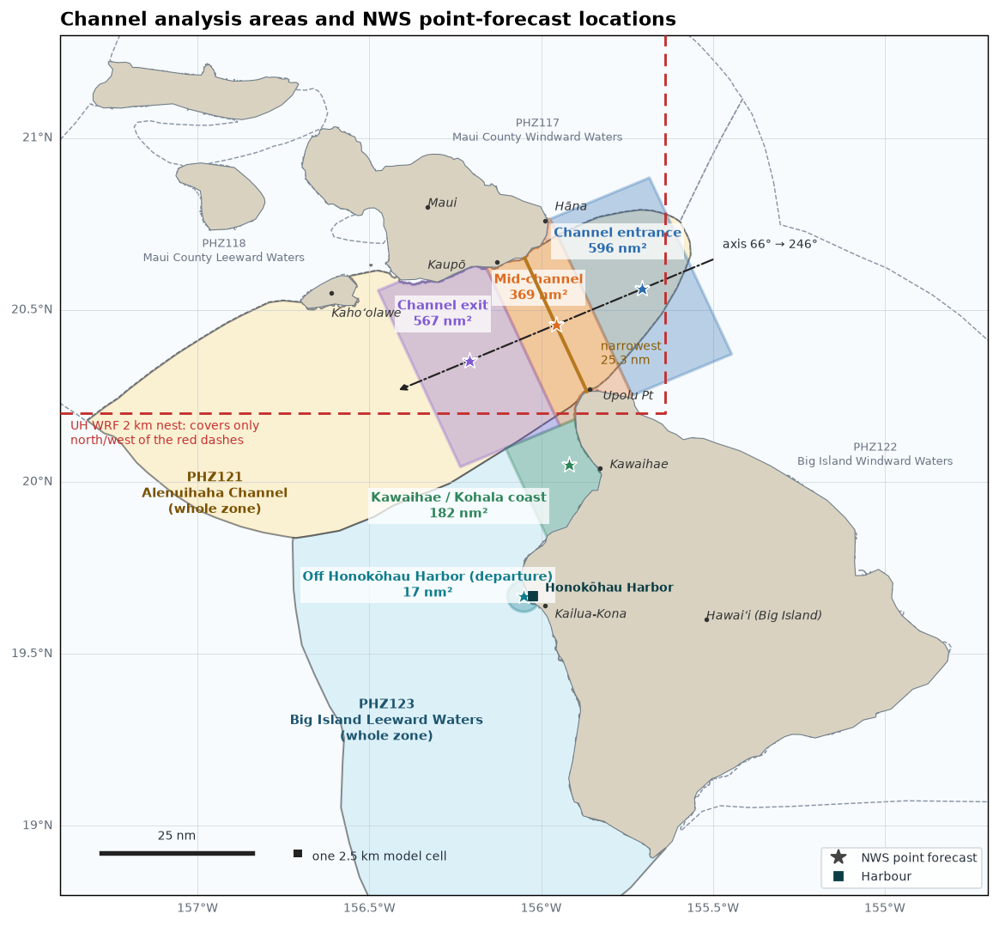
The areas this briefing analyses, used by every map and calculation on the page. The narrowest water between Maui and the Big Island is 25.3 nm, from Maui's Kaupō–Kīpahulu coast to Upolu Point (the orange line); the channel axis is perpendicular to it, 066°/246°. Mid-channel is the throat itself (±6.5 nm), with the entrance and exit 6.5–24 nm either side, a strip along the Kawaihae / Kohala coast, and water within 2.7 nm of a point 1.6 nm off Honokōhau Harbor. Stars mark where each area's NWS point forecast is taken. All areas are water only. The two marine zones they sit in, PHZ121 (Alenuihāhā Channel) and PHZ123 (Big Island leeward waters), are outlined and are also on the chart below. Tap the map for full size.
Model wind maps
Two models side by side for Maui to the Big Island (RRFS and NBM to start; pick any model, gust or REFS product in each menu). Colour is wind speed on each model's own 2.5 km grid, streamlines show direction; move over or tap a map to read the wind there.
Open the full map tool → REFS ensemble maps →
The full tool shows up to four maps on one time slider, plays the hours, and lists every model's run and forecast hours. The REFS maps show where the forecast is uncertain: the ensemble mean, its spread (1 standard deviation) and the chance of 20/30/35/40 kt.
Forecast wind by area
Forecast 10 m wind for each channel area from every model the briefing reads, on one chart. The shaded band is the range across the models and the NWS grid, and the grey line is their median, so a narrow band means they agree. The black line is the NWS Honolulu forecast (the grid the zone forecasts are written from). Tap a model to add its own line (dashed = gusts); tap RRFS last runs to see how the last six RRFS runs differ, which shows how much the forecast has been shifting. Drag the slider (or move over the chart) to read every model at one hour. The arrows under the chart show the models' average direction (weighted by speed), pointing downwind; red dashed lines mark the small craft advisory (25 kt) and gale (34 kt) thresholds. On the full-zone tabs the NWS zone forecast is drawn too: a dashed box for each period's wind range, a dotted line for its gusts and a strip for any headline; its wording is under the slider (tap NWS zone text to show it on the other tabs, using the zone the area is in).
RRFS extended is the 12Z run, which is also the newest RRFS run, so there is no separate RRFS latest line this time. When a newer short (18 h) run comes out, it is added as RRFS latest.
Model values are averaged over the area's grid points; gust is the 90th percentile across the area (the gustier part of it, not a single grid point). NWS values are at the area's reference point; for a whole zone they are the average of eight points spread through it. Speeds in knots. Build time Sat 31 Oct 06:30 HST.
Models: how often they run and which run is shown
| Source | What it is and how often it runs | Run shown | Age at build | Forecast hours used | Status |
|---|---|---|---|---|---|
| NWS | NWS Honolulu's gridded forecast, the grid the zone and point forecasts are written from; updated whenever forecasters issue (at least twice a day). | updated 2026-10-31T16:01Z Sat 06:01 HST | 0 h | ok | |
| RRFS extended | NOAA's new convection-allowing model, 2.5 km over Hawaii. 00/06/12/18Z runs go out 84 h (the 'extended' runs); the others go out 18 h. Every 3 h in today's pre-operational feed, hourly once operational on 14 Oct 2026. | 12Z Sat 31 Oct Sat 02:00 HST | 4 h | f001–f048 hourly, f051–f075 every 3 h | ok |
| NBM | National Blend of Models: a calibrated blend of many models, 2.5 km, a new run every hour. Continues after the RRFS change. | 15Z Sat 31 Oct Sat 05:00 HST | 2 h | f001–f048 hourly, f051–f072 every 3 h | ok |
| UH WRF | University of Hawaii WRF (run at UH, not NCEP, so not affected by the RRFS change): one run a day, 7 days; PacIOOS posts it about a day late. 2 km Maui-Oahu nest where an area fits in it, 6 km statewide otherwise. No gusts.; 2 km Maui-Oahu nest and 6 km statewide | 06Z Thu 29 Oct Wed 20:00 HST | 58 h | f055–f106 hourly, f109–f130 every 3 h | ok |
| REFS | Ensemble products built from the current and 6 h older RRFS runs plus the RRFS ensemble members; every 6 h (00/06/12/18Z), hourly out to 60 h, 2.5 km. | 12Z Sat 31 Oct Sat 02:00 HST | 4 h | f001–f060 hourly | ok |
RRFS extended is the newest 00/06/12/18Z run (out to 84 h). When a newer short run exists (out to 18 h) it is added as RRFS latest; the median and band use one RRFS, the extended. The pre-operational feed runs every 3 h; the operational RRFS (from 14 Oct 2026) runs hourly, and the page picks that up by itself. HiResW (ARW and FV3) is left out: NCEP retires it for Hawaii on 14 Oct 2026. NBM is a calibrated blend of many models rather than a model of its own. UH WRF has no gusts and publishes one run a day.
REFS ensemble by area
REFS is NOAA's high-resolution ensemble: it combines the latest and 6 h older RRFS runs with the RRFS ensemble members, so it can say how likely a wind is rather than giving one answer. Run 12Z Sat 31 Oct (Sat 02:00 HST), hourly to 60 h. Top: ensemble-mean wind with a band of ± one spread; the spread is the ensemble's standard deviation, so roughly two members in three fall inside the band. A wide band means the members disagree. In the Area average view the dotted lines are the lowest and highest area-average wind among the 11 runs at each time (every 3 h). They cover every run rather than two in three, so they often sit outside the band: the gap between them is the full range of outcomes the runs give. REFS's mean wind speed runs above the individual RRFS winds (about 1 kt mid-channel, up to ~5 kt along the Kohala coast where directions vary), so read it as the upper side of typical rather than the middle. Bottom: the chance of the wind reaching a threshold (tap a threshold to hide its line). Drag the slider to read every value at one hour.
The two buttons ask the same runs two different questions; they are not two separate opinions. REFS is made from the RRFS ensemble members plus the deterministic RRFS, and the 11 runs here are those runs (the five members of the latest run and of the run 6 h before, plus the deterministic RRFS). Area average asks each run for its average wind over this area and counts how many reach 25 kt (small craft advisory), 30 kt or 34 kt (gale), every 3 h to 60 h. Within ~20 nm (REFS) is NOAA's own product: the chance of 20, 30, 35 or 40 kt anywhere within roughly 20 nm of a point, so an area beside the jet can show a high chance while its own average wind stays light. For deciding whether the water you will be on reaches a threshold, the area average is the more direct answer.
ASCAT Coastal Winds (UHR)
This section shows the latest 12 coastal UHR ASCAT wind images. “Coastal UHR” (Ultra High Resolution, 12.5 km) products provide enhanced detail near coastlines, helping reveal localized wind features such as those in the Alenuihāhā Channel. Satellite orbits vary, so not all passes cover the area. Times are shown in UTC (Zulu). Hawaiʻi Standard Time (HST) is 10 hours behind UTC.
Tap the composite to open it full size.
ASCAT coastal wind images: NOAA / NESDIS Center for Satellite Applications and Research (STAR). Contains data Copyright 2026 EUMETSAT.
Sun & Moon
Lights on at sunset 17:49, off at sunrise 06:25 tomorrow: Rule 20 binds a vessel under way from sunset to sunrise, not from dark. Honokōhau Harbor is within a minute of these times.
| Mid-channelHST | Today31 Oct | Tomorrow1 Nov | Mon2 Nov |
|---|---|---|---|
| Nautical dawn | 05:36 | 05:36 | 05:37 |
| Civil dawn | 06:02 | 06:03 | 06:03 |
| Sunrise | 06:25 | 06:25 | 06:26 |
| Local apparent noon (LAN) | 12:07 | 12:07 | 12:07 |
| Sun's altitude at LAN | 55.2° S | 54.9° S | 54.6° S |
| Sunset | 17:49 | 17:48 | 17:48 |
| Civil dusk | 18:12 | 18:11 | 18:11 |
| Nautical dusk | 18:38 | 18:37 | 18:37 |
| Daylight | 11h 23m | 11h 22m | 11h 21m |
24-hour HST. Civil twilight (sun 6° down) is the light left after sunset, enough to see other boats and the harbour entrance: the practical limit for coming in. By nautical dusk (12° down) the horizon is gone. Twilight is short this close to the tropics, about 22 minutes, so dark comes quickly after sunset. Local apparent noon (LAN) is when the sun crosses the meridian: highest in the sky, the time of a noon sight and of the strongest UV. The channel is 6° west of the meridian HST keeps time by, so LAN comes about 24 minutes after clock noon on average: from about 12:07 in early November to about 12:38 in mid February, as the equation of time runs through the year. The altitude is the sun's height above the horizon then, and which way it bears (south for most of the year; north from late May to mid July, when the sun passes overhead).
Moon
Waning gibbous, 63% lit · today it sets 12:15 · rises 23:30.
- Last quarter Sun 1 Nov 10:36
- New moon Sun 8 Nov 21:09
- First quarter Tue 17 Nov 01:49
- Full moon Tue 24 Nov 05:14
| Moon at noon | Rises / sets | |
|---|---|---|
| Today31 Oct | Waning gibbous, 61% lit | sets 12:15 rises 23:30 |
| Tomorrow1 Nov | Last quarter, 49% lit | sets 13:02 |
| Mon2 Nov | Waning crescent, 38% lit | rises 00:33 sets 13:44 |
The moon decides how dark a night crossing is: a full moon rises about when the sun sets and is up all night, a new moon not at all. It also sets the tides: spring tides, the largest ranges, follow new and full moon by a day or two; neaps follow the quarters. Hawaiʻi's tides are small (about 2 ft at Kawaihae, a little more at springs), so here they matter mostly for the currents along the coasts and at the channel's ends. Computed for mid-channel to within a few minutes; rise and set are the top of the disc on a sea horizon.
UV index
8Peak 8 (very high) at 12:00 today · moderate or higher 10:00–14:00. At that level unprotected fair skin reddens in roughly 20 minutes: well inside a crossing. Sunscreen on the face, neck, ears and the backs of the hands, a hat and sunglasses: there is no shade on deck, and the water reflects part of the dose back up from below, where a brim does not reach.
The EPA's hourly UV index forecast for ZIP 96755 (Kapaʻau, North Kohala, on the channel's Big Island shore), today, HST; local apparent noon 12:07. Bands are the WHO's: 0–2 low, 3–5 moderate, 6–7 high, 8–10 very high, 11+ extreme. At 20°N the midday sun is high all year, so the index reaches very high or extreme on most clear days. About the UV index.
Experimental — Alenuihāhā Channel Wind Analysis
What drives the wind through the Alenuihāhā Channel, one ingredient at a time: the Pacific High that sets up the trades, the pressure gradient across the islands and across the channel itself, the wind feeding in and out, and the trade-wind inversion that caps it. Each part gives the latest numbers first; the method is under How it works.
Pacific High · Isobars over the channel · Station pressure gradient · Buoy pressure gradient · Inflow and outflow · Trade-wind inversion
Synoptic-Scale Forcing: the Pacific High
How it works
The Pacific High's lobes are found automatically in the latest NOAA GFS sea-level pressure (0.25°) over 25–50°N, 125–180°W, at T−24h, now (T0), T+24h and T+48h, and ranked by how hard each pushes toward the channel: the pressure difference between the lobe and the channel over their distance (the gradient), and how well that push lines up with the channel axis (066°/246°). Push along the axis is the geostrophic wind that gradient implies, resolved along the channel. A lobe's size is the area within N hPa of its peak (red outline on the maps).
Where the high is going
Lobe centres at each time over the current isobars; the dashed line follows the top-ranked lobe.
The analysis at each time
Top lobe by time
| Time | Valid (HST) | High centre | Pressure | Distance to channel | Gradient to channel (hPa/1000 nm) | Off channel axis | Push along the axis |
|---|---|---|---|---|---|---|---|
| T−24h | Fri 30 Oct 02:00 | 38.8°N 165.8°W | 1023.2 hPa | 1,210 nm | 9.9 | 86° | 1 kt |
| T0 (now) | Sat 31 Oct 02:00 | 41.8°N 179.0°W | 1035.2 hPa | 1,732 nm | 13.1 | 65° | 9 kt |
| T+24h | Sun 01 Nov 02:00 | 36.0°N 171.8°W | 1029.7 hPa | 1,249 nm | 13.7 | 68° | 9 kt |
| T+48h | Mon 02 Nov 02:00 | 33.8°N 160.8°W | 1026.5 hPa | 838 nm | 13.2 | 85° | 2 kt |
Local Isobar Field over the Channel
How it works
A flat pressure surface is fitted to the GFS sea-level pressure over the ocean in a ~180 nm box around the channel (land excluded), for T−24h, now, T+24h and T+48h. Its slope gives the geostrophic wind: speed, direction, the angle to the channel axis (066°/246°) and the part along it. The box spans the whole channel, so there is one value per time; differences between the entrance, mid-channel and exit come from the high-resolution models. Geostrophic wind ignores friction and the terrain's squeeze, so the real channel wind can be well above or below it.
By time
| Time | Valid (HST) | Speed kt | From °T | Off axis | Along axis kt | Fit |
|---|---|---|---|---|---|---|
| T−24h | 2026-10-30 02:00 | 18 | 109° | 43° | 13 | Moderate (R² 0.95, RMS 0.13 hPa) |
| T0 (now) | 2026-10-31 02:00 | 23 | 115° | 49° | 15 | Moderate (R² 0.96, RMS 0.15 hPa) |
| T+24h | 2026-11-01 02:00 | 14 | 100° | 34° | 12 | Moderate (R² 0.90, RMS 0.15 hPa) |
| T+48h | 2026-11-02 02:00 | 32 | 093° | 27° | 29 | Moderate (R² 0.95, RMS 0.24 hPa) |
Pressure Gradient Across the Channel (Stations)
Why this differs from the isobars above. The GFS field in Local Isobar Field has pressure falling 1.3 hPa per 100 nm toward 205°; the stations measure 2.2 toward 191°: in about the same direction and about as steep, and both are right at their own scale. GFS fits a 180 nm box on a 0.25° grid that cannot resolve the islands; the stations sit on either side of the islands' own pressure pattern, higher on the windward side where the trades pile up against Haleakalā and Kohala and lower in the lee. That local difference is what drives the channel jet, so it is the one to watch here. RRFS, at 2.5 km, puts 2.9 hPa per 100 nm toward 200° at the same stations, about 1.3 times what they measure: a model that resolves the islands sees the steep local gradient too.
How it works
The push through the channel measured at its own scale. Each hour a flat pressure surface is fitted through the stations around the channel that report sea-level pressure (Kahului airport (PHOG), Hamoa (near Hana) (023HI), Iole (near Upolu Pt) (075HI), Kawaihae harbor (1617433), Kona airport (PHKO), Lanai airport (PHNY)), after removing each station's constant offset over the last five days. Pressure drop toward the exit is how fast pressure falls along the channel axis toward the exit (066°/246°): the forcing that accelerates air through the channel. Channel-wind potential is the speed air would reach running down that drop from the entrance to the exit (~49 nm), √(2Δp/ρ): an upper bound, since friction and mixing hold the real wind below it, but it rises and falls with the forcing. The dashed red line is the same calculation from RRFS's forecast pressure at the same stations, so you can see whether the observed gradient is running ahead of the model or behind it. No geostrophic wind is given: this close to the tropics and the islands the local gradient is far from geostrophic balance.
The fitted isobars now
Magenta: the fitted isobars (hPa, every 1; thin lines at the half), arrow toward low pressure. Dashed: the channel throat. Values: each station's pressure less its 5-day offset; grey = no report this hour.
Regional Pressure Gradient (Buoys)
How it works
Buoy 51000 (23.5°N, 153.8°W) lies northeast of the islands and buoy 51002 (17.1°N, 157.8°W) southwest of them, about 450 nm apart. Their pressure difference is the large-scale push across the Hawaiian chain; their winds are the trade flow going in and coming out. The angle "off the channel axis" is between each buoy's wind and the axis (066°/246°); winds lined up with the channel funnel through it more readily.
| Latest Sat 05:40 | 3 h mean | 24 h mean | 24 h typical (middle half) | 24 h highest | |
|---|---|---|---|---|---|
| Pressure difference 51000 minus 51002 | 2.6 hPa | 2.7 | 2.7 | 2.6–2.9 | 3.4 Fri 16:00 |
| Gradient across the islands | 5.8 hPa/1000 nm | 6.0 | 6.1 | 5.8–6.5 | 7.6 Fri 16:00 |
| Geostrophic wind from that gradient | 10 kt | 10 | 10 | 10–11 | 13 Fri 16:00 |
| Inflow wind, 51000 | 12 kt | 12 | 12 | 12–14 | 16 Fri 21:10 |
| Inflow gust, 51000 | — | 14 | 15 | 14–16 | 19 Fri 21:10 |
| Inflow off channel axis | 14° | 21° | 13° | ||
| Outflow wind, 51002 | 6 kt | 6 | 3 | 2–4 | 8 Fri 07:40 |
| Outflow gust, 51002 | — | 7 | 5 | 4–6 | 12 Fri 07:40 |
| Outflow off channel axis | 74° | 59° | 48° |
The last 24 hours
Inflow and Outflow Wind
Wind and gusts at both buoys over 24 h, and how far each is from the channel axis (0° = straight down the channel; within 15° is well lined up).
Trade-Wind Inversion (Hilo soundings)
How it works
The inversion is a lid on the trade winds: a strong, low one squeezes the flow through the channel and speeds it up; a weak or missing one lets it mix upward. Each twice-daily balloon from Hilo (91285) is searched for a layer below ~4 km that warms and dries upward. Warming Δθ is the jump in potential temperature across it (stability), Drying ΔRH the drop in relative humidity, and the strength index (0–10) combines them, favouring sharp, dry layers of moderate thickness (weak below 3, moderate 3–6, strong 6 or more). Supportive lids usually have a base near 1.5–2.5 km, 100–600 m thick, Δθ of 2 K or more and ΔRH of 15–30% or more. Check the Skew-T diagrams for the full profile.
| Launch (HST) | Inversion base–top | Thickness | Warming Δθ | Drying ΔRH | Strength (0–10) | Wind 925–850 hPa |
|---|---|---|---|---|---|---|
| Thu 29 Oct 14:00 | 2,143–2,233 m (7,031–7,326 ft) | 90 m | 1.8 K | 15% | 1.1 weak | 4 kt |
| Fri 30 Oct 02:00 | none found below 4 km | — | — | — | — | 9 kt |
| Fri 30 Oct 14:00 | none found below 4 km | — | — | — | — | 6 kt |
| Sat 31 Oct 02:00 | none found below 4 km | — | — | — | — | 8 kt |
Strength rates the inversion itself: weak below 3, moderate 3–6, strong 6 or more.